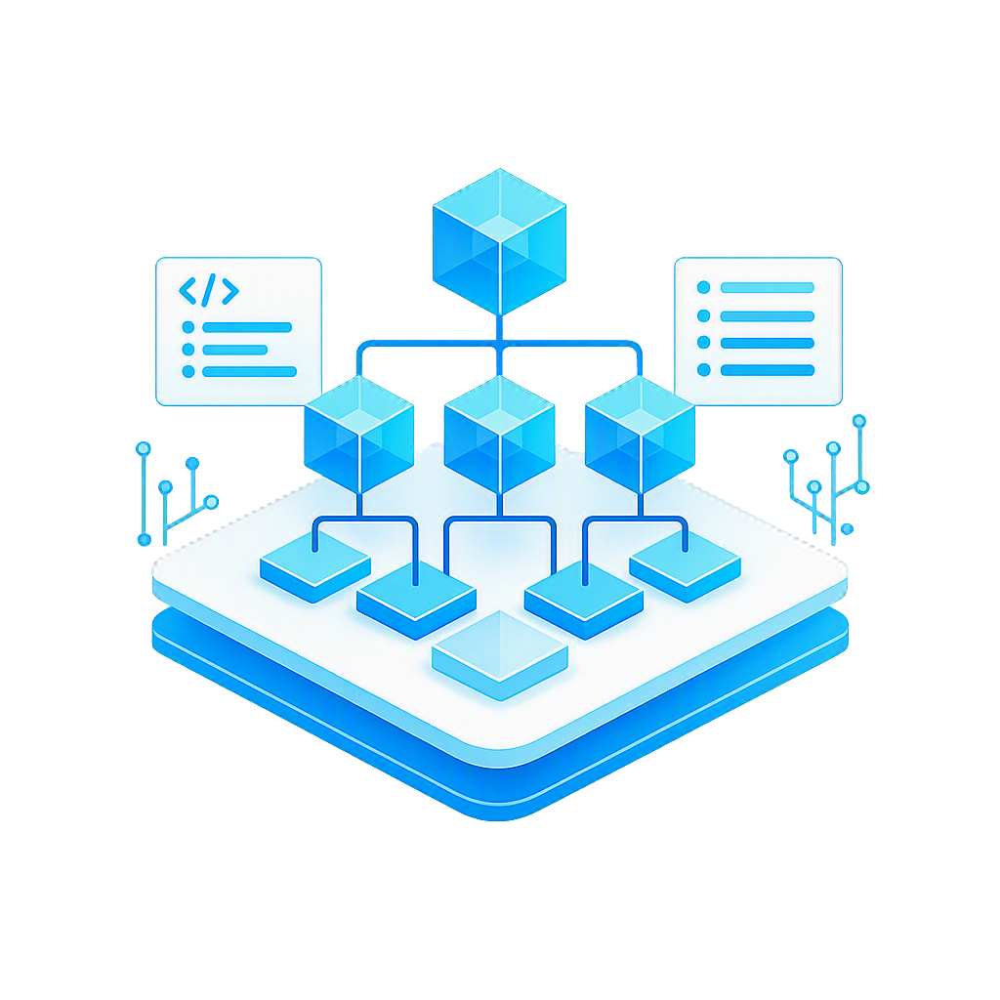

中小企業の複雑な課題を可視化し、
解決策の設計・実行・定着までを一貫して支援します。
さらに、次の成長フェーズを見据えた
新規事業・サービス・ブランドの創出まで全力で伴走いたします。
丁寧なヒアリングと整理・可視化を通じて、
課題の本質を明らかにします。

経営や現場業務の本質的な課題を明らかにします。
同時に潜在的な成長機会や新たな価値の種も見える化します。
改善策にとどまらず、
高収益モデルにつながる打ち手を設計します。
現場で実行できる形に落とし込み、成果につながる具体的な打ち手を描きます。新規サービス立ち上げ、業務改革、ブランド再構築など、企業の次の収益の柱を共に形にします。
成果が出るまで、
成果が続く仕組みができるまで伴走します。
顧問契約を基本とし、経営課題の整理から実行・検証まで伴走します。
助言にとどまらず成果が続く仕組みをつくり、成果が出た後も改善提案を継続。経営の意思決定・成長を長期で支えます。
私たちは「きれいな資料を作って終わり」ではありません。
ツールを導入して終えるような支援でもありません。
企業の利益が生まれるまで、そして生み続けられるように、
共に悩み、考え、歩む伴走型のパートナーです。
机上の空論ではなく、現場で確実に機能する形に落とし込み、
理論を実行と成果へ結びつけます。
「考える」から「動かす」までを切り離さず、
企業の成長と利益創出を一貫して支援し続けます。
地域に根差す企業の成長パートナーとして、伴走支援を行っています。
現場データ活用の伴走支援
業務効率化の伴走支援
課題整理から、新たな事業づくりや改善の打ち手まで